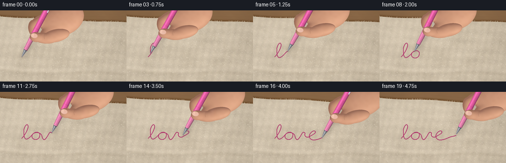
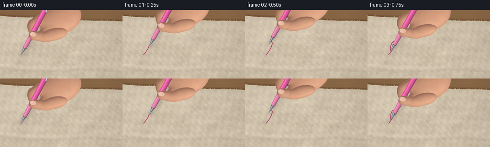

CODING AGENTS AS PIXEL WORLD MODELS
traex/GPT-6.1-Sol · mechanics_0048
点击播放 · 原生 RGB 像素
逐轮保存的候选
回放视频、检查图与代码变化。
每份候选均可单独播放。实际图片检查记录在下方工具轨迹中。
候选 01播放与检查图
点击播放 · 原生 RGB 像素


展开代码变化
--- 上一保存版本
+++ 本次保存版本
@@ -0,0 +1,286 @@
+"""Procedural, supersampled macro video of a pink gel pen writing on linen.
+No external assets or rendering engines are used.
+"""
+from pathlib import Path
+import math
+import numpy as np
+from PIL import Image, ImageDraw, ImageFilter
+from artifact_io import save
+
+ROOT = Path(__file__).resolve().parent
+S = 3
+W, H = 256*S, 144*S
+Y, X = np.mgrid[:H,:W].astype(np.float32)/S
+rng = np.random.default_rng(4821)
+
+def smooth_noise(w,h,scale=1):
+ im = Image.fromarray(np.uint8(rng.random((h,w))*255))
+ return np.asarray(im.resize((W,H),Image.Resampling.BICUBIC),dtype=np.float32)/255-.5
+
+fine = rng.normal(0,1,(H,W)).astype(np.float32)
+coarse = smooth_noise(45,28)
+cloud = smooth_noise(9,6)
+yarnnoise = smooth_noise(100,75)
+
+def rgb(arr):
+ return Image.fromarray(np.uint8(np.clip(arr,0,255)))
+
+def blur_arr(arr, radius):
+ return np.asarray(rgb(arr).filter(ImageFilter.GaussianBlur(radius*S)),dtype=np.float32)
+
+# Sloping linen weave. Each cell alternates which yarn passes over the other.
+u = X + .19*Y + .21*np.sin(Y*.09) + .09*np.sin(X*.13)
+v = Y - .055*X + .19*np.sin(X*.07)
+U = u/2.48
+V = v/2.23
+ix = np.floor(U+.5).astype(int)
+iy = np.floor(V+.5).astype(int)
+du = U-ix
+dv = V-iy
+warp = np.sqrt(np.clip(1-(du/.49)**2,0,1))
+weft = np.sqrt(np.clip(1-(dv/.49)**2,0,1))
+# Round fiber cross-sections, occlusion at yarn edges, alternating over/under.
+over = ((ix+iy)%2)==0
+wv = np.where(over,warp*.94 + weft*.14, weft*.94 + warp*.14)
+wv -= np.where(over,np.maximum(0,-du)*.25,np.maximum(0,-dv)*.25)
+fibril = 1.25*np.sin(u*26+np.sin(v*1.5)) + 1.1*np.sin(v*29+np.sin(u*.7))
+thread_var = 3*np.sin(ix*5.173)+2.7*np.sin(iy*7.021)
+relief = (wv-.64)*24 + fibril + thread_var + 6*yarnnoise + fine*1.05
+foldpos = Y-(117+.042*X+3.8*np.sin(X*.023))
+fold = -9*np.exp(-((foldpos-4)/4)**2) + 7*np.exp(-((foldpos+2)/5)**2)
+light = 9 - .037*X - .036*Y + 13*cloud + 4*coarse + fold
+fabric = np.stack([202+light+relief,188+light+relief*.95,166+light+relief*.84],-1)
+# Sparse natural lint and individual loose fibers, kept much thinner than yarn.
+fabric_img=rgb(fabric)
+d=ImageDraw.Draw(fabric_img)
+for _ in range(1400):
+ x,y = rng.uniform(0,256),rng.uniform(15,144)
+ length=rng.uniform(.4,2.8)
+ if rng.random()<.5:
+ ex,ey=x+length,y-.055*length+rng.normal(0,.12)
+ else:
+ ex,ey=x+.19*length,y+length
+ c=tuple(int(q) for q in np.clip(np.array([231,219,198])+rng.normal(0,9),0,255))
+ d.line((x*S,y*S,ex*S,ey*S),fill=c,width=1)
+fabric=np.asarray(fabric_img,dtype=np.float32)
+# Subtle depth of field: in-focus writing surface, softer distant edge.
+soft=blur_arr(fabric,.85)
+dof=np.clip((np.abs(Y-86)-38)/42,0,.8)[...,None]
+fabric=fabric*(1-dof)+soft*dof
+edge = 12 + .05*X + 1.0*np.sin(X*.045)
+woodnoise = smooth_noise(24,144)
+woodgrain = 2*np.sin(Y*1.4+np.sin(X*.08)) + 4*woodnoise + 4*cloud
+wood = np.stack([139+woodgrain,105+woodgrain*.8,72+woodgrain*.6],-1)
+wood=blur_arr(wood,1.4)
+edge_shadow=np.exp(-((Y-edge+1)/2.6)**2)*23
+wood-=edge_shadow[...,None]
+fabric_mask=np.clip((Y-edge)*2+.5,0,1)
+background=wood*(1-fabric_mask[...,None])+fabric*fabric_mask[...,None]
+# Frayed top cut edge, small irregular loose threads.
+im=rgb(background);d=ImageDraw.Draw(im)
+for _ in range(125):
+ x=rng.uniform(0,256); yy=12+.05*x+np.sin(x*.045)
+ d.line([(x*S,(yy+.8)*S),((x+rng.uniform(-1.1,1.1))*S,(yy-rng.uniform(.2,2.4))*S)],fill=(211,196,172),width=1)
+background=np.asarray(im,dtype=np.float32)
+
+# A single cursive continuous stroke; sampled by arc length for natural writing.
+segments=[
+ ((44,94),(49,90),(58,75),(57,69)),
+ ((57,69),(55,62),(48,71),(48,80)),
+ ((48,80),(48,101),(55,98),(65,87)),
+ ((65,87),(73,77),(83,82),(80,90)),
+ ((80,90),(78,100),(63,98),(65,88)),
+ ((65,88),(67,81),(79,80),(84,87)),
+ ((84,87),(85,91),(87,99),(91,96)),
+ ((91,96),(96,92),(98,85),(101,82)),
+ ((101,82),(102,81),(106,82),(105,85)),
+ ((105,85),(103,90),(110,94),(115,90)),
+ ((115,90),(120,87),(129,83),(126,80)),
+ ((126,80),(121,76),(112,87),(114,91)),
+ ((114,91),(117,102),(133,96),(141,92)),
+ ((141,92),(146,90),(150,90),(155,88)),
+]
+pts=[]
+for seg in segments:
+ a,b,c,e=np.array(seg,dtype=float)
+ for t in np.linspace(0,1,80,endpoint=False):
+ pts.append((1-t)**3*a+3*(1-t)**2*t*b+3*(1-t)*t*t*c+t**3*e)
+pts.append(np.array(segments[-1][-1],float))
+pts=np.array(pts)
+lengths=np.r_[0,np.cumsum(np.linalg.norm(np.diff(pts,axis=0),axis=1))]
+
+# Analytically shaded elongated skin ellipsoids, combined as a soft surface.
+# Returned height fields permit smooth joints and direct normal shading.
+def ellipsoid(cx,cy,rx,ry,angle=0,height=12):
+ ca,sa=np.cos(angle),np.sin(angle)
+ dx=X-cx;dy=Y-cy
+ a=(dx*ca+dy*sa)/rx; b=(-dx*sa+dy*ca)/ry
+ q=1-a*a-b*b
+ mask=q>0
+ zz=height*np.sqrt(np.maximum(q,0))
+ return np.where(mask,zz,-1e3),mask
+
+def skin_layer(canvas, forms, creases=(), nail=None):
+ zs=[]; masks=[]
+ for f in forms:
+ z,m=ellipsoid(*f);zs.append(z);masks.append(m)
+ zstack=np.stack(zs)
+ zmax=zstack.max(axis=0)
+ valid=zmax>-500
+ # Smooth union across overlapping finger segments.
+ weights=np.exp(np.clip((zstack-zmax)/2.2,-60,0))
+ zz=zmax+2.2*np.log(weights.sum(axis=0))
+ zz=np.where(valid,zz,0)
+ gy,gx=np.gradient(zz,1/S)
+ norm=np.sqrt(gx*gx+gy*gy+1)
+ diffuse=np.clip((-.40*gx-.50*gy+.77)/norm,0,1)
+ shade=.68+.35*diffuse
+ tone=np.stack([221*shade,165*shade,132*shade],-1)
+ # Natural warmer edge and subtle skin mottling rather than flat vector fills.
+ edgewarm=np.clip(1-diffuse,0,1)
+ tone[...,0]+=edgewarm*5
+ tone[...,1]-=edgewarm*3
+ tone+=((coarse*4+cloud*3+fine*.45)[...,None])
+ highlight=np.power(np.clip((-.32*gx-.45*gy+.83)/norm,0,1),24)*7
+ tone+=highlight[...,None]
+ # Smooth subpixel silhouette at the analytic edge.
+ mask=valid.astype(np.float32)
+ canvas=canvas*(1-mask[...,None])+tone*mask[...,None]
+ if creases:
+ lay=Image.new('RGBA',(W,H),(0,0,0,0));dd=ImageDraw.Draw(lay)
+ for path,opacity in creases:
+ dd.line([(x*S,y*S) for x,y in path],fill=(134,87,65,opacity),width=1*S)
+ lay=lay.filter(ImageFilter.GaussianBlur(.3*S))
+ canvas=np.asarray(Image.alpha_composite(rgb(canvas).convert('RGBA'),lay).convert('RGB'),dtype=np.float32)
+ if nail is not None:
+ cx,cy,rx,ry,angle=nail
+ ca,sa=np.cos(angle),np.sin(angle)
+ xx=(X-cx)*ca+(Y-cy)*sa
+ yy=-(X-cx)*sa+(Y-cy)*ca
+ r2=(xx/rx)**2+(yy/ry)**2
+ nm=np.clip((1-r2)*S*3,0,1)
+ nl=np.stack([234+2*yy/ry,187+4*yy/ry,167+6*yy/ry],-1)
+ border=np.exp(-((np.sqrt(r2)-.92)/.05)**2)*10
+ nl-=border[...,None]*np.array([.7,1,.85])
+ nl+=np.exp(-((xx/rx+.36)/.21)**2-((yy/ry+.24)/.8)**2)[...,None]*16
+ canvas=canvas*(1-nm[...,None])+nl*nm[...,None]
+ return canvas
+
+def pen_mask(p,axis):
+ dx=X-p[0];dy=Y-p[1]
+ along=dx*axis[0]+dy*axis[1]
+ cross=dx*(-axis[1])+dy*axis[0]
+ rad=np.where(along<16,.6+along*.20,np.where(along<52,4.1+.037*(along-16),5.55))
+ return (along>0)&(along<167)&(np.abs(cross)<rad),along,cross,rad
+
+def paint_pen(canvas,p,axis):
+ mask,s,r,rad=pen_mask(p,axis)
+ n=r/np.maximum(rad,.1)
+ curvature=np.sqrt(np.clip(1-n*n,0,1))
+ # Light from upper left, longitudinal narrow reflection bands on rounded plastic.
+ lum=.56+.41*curvature-.17*n
+ pink=np.stack([238*lum+4,91*lum+7,161*lum+9],-1)
+ highlight=np.exp(-((n+.40)/.16)**2)*31
+ pink+=highlight[...,None]*np.array([1,.84,.92])
+ grip=(s>=16)&(s<52)
+ gcol=np.stack([232*lum+5,127*lum+8,174*lum+6],-1)
+ # Closely spaced rounded grip ribs, visibly raised rubber rings.
+ ribs=np.cos((s-17)*2*np.pi/3.2)
+ gcol+=(ribs*5)[...,None]
+ gcol+=np.exp(-((n+.45)/.17)**2)[...,None]*17
+ color=np.where(grip[...,None],gcol,pink)
+ metal=(s<16)
+ ml=.3+.38*curvature+.13*np.cos(n*7)+.20*np.exp(-((n+.42)/.16)**2)
+ chrome=np.stack([172*ml+30,177*ml+29,185*ml+30],-1)
+ chrome+=np.exp(-((n+.26)/.09)**2)[...,None]*57
+ chrome-=np.exp(-((n-.45)/.16)**2)[...,None]*34
+ color=np.where(metal[...,None],chrome,color)
+ # Black nib socket and silver writing ball.
+ bands=((s>14.8)&(s<16.0))|((s>51.0)&(s<52.1))
+ color=np.where(bands[...,None],color*.7,color)
+ nib=s<2.2
+ color=np.where(nib[...,None],np.array([67,60,68])+curvature[...,None]*np.array([98,91,99]),color)
+ # Barrel seam and small printed identification, not an on-screen graphic.
+ seam=np.exp(-((s-64)/.5)**2)*13
+ color-=seam[...,None]
+ canvas=np.where(mask[...,None],color,canvas)
+ # Modest narrow chrome clip running along the far side of upper barrel.
+ cm=(s>103)&(s<145)&(n>.51)&(n<.91)
+ cl=np.stack([174+curvature*52,178+curvature*52,185+curvature*49],-1)
+ canvas=np.where(cm[...,None],cl,canvas)
+ # Discrete fine barrel markings follow the pen axis, integrated into plastic.
+ label=Image.new('RGBA',(W,H),(0,0,0,0));dd=ImageDraw.Draw(label)
+ b=np.array([-axis[1],axis[0]])
+ for j in range(10):
+ a=p+axis*(75+j*1.25)+b*.9
+ e=a+b*(1.2 if j%3 else 2.4)
+ dd.line([tuple(a*S),tuple(e*S)],fill=(129,38,89,145),width=1)
+ canvas=np.asarray(Image.alpha_composite(rgb(canvas).convert('RGBA'),label).convert('RGB'),dtype=np.float32)
+ return canvas
+
+frames=[]
+for frame in range(20):
+ # 4.25 seconds of steady writing, with brief final pause and tiny lift.
+ progress=min(frame/17,1)
+ target=lengths[-1]*(.02+.98*progress) if frame else 0
+ k=int(np.searchsorted(lengths,target,side='right'))
+ k=min(max(k,1),len(pts)-1)
+ frac=(target-lengths[k-1])/max(1e-6,lengths[k]-lengths[k-1])
+ contact=pts[k-1]*(1-frac)+pts[k]*frac
+ lift=max(frame-17,0)*1.1
+ p=contact+np.array([.15*math.sin(frame*2.1),-lift])
+ angle=-1.085+.027*math.sin(frame*.5)
+ axis=np.array([np.cos(angle),np.sin(angle)])
+ b=np.array([-axis[1],axis[0]])
+ # Deposited ink is fixed to the weave, never attached to the moving pen.
+ ink=Image.new('L',(W,H),0);di=ImageDraw.Draw(ink)
+ trace=np.vstack([pts[:k],contact])
+ if frame>0:
+ di.line([tuple(v*S) for v in trace],fill=255,width=4,joint='curve')
+ # Tiny starting ink dot from first contact.
+ sx,sy=pts[0];di.ellipse(((sx-.48)*S,(sy-.48)*S,(sx+.48)*S,(sy+.48)*S),fill=210)
+ m=np.asarray(ink,dtype=np.float32)/255
+ bleed=np.asarray(ink.filter(ImageFilter.GaussianBlur(.33*S)),dtype=np.float32)/255
+ absorb=np.clip(.72+.19*wv+.035*coarse+.035*fine,.56,.98)
+ alpha=np.clip(m*absorb*.84+bleed*.22,0,.96)
+ inkcolor=np.stack([174+relief*.50,44+relief*.23,104+relief*.38],-1)
+ canvas=background*(1-alpha[...,None])+inkcolor*alpha[...,None]
+ # Pen's soft directional shadow, narrowing to a sharp contact shadow at nib.
+ sm=Image.new('L',(W,H),0);ds=ImageDraw.Draw(sm)
+ q0=p+np.array([1.4,1.4+lift*.8])
+ q1=p+axis*115+np.array([12,11])
+ ds.line([tuple(q0*S),tuple(q1*S)],fill=85,width=9*S)
+ sm=sm.filter(ImageFilter.GaussianBlur(3.8*S))
+ sh=np.asarray(sm,dtype=np.float32)/255
+ canvas*=1-sh[...,None]*.36
+ dot=np.exp(-(((X-contact[0]-.4)/1.6)**2+((Y-contact[1]-.3)/.8)**2))*.16/(1+lift)
+ canvas*=1-dot[...,None]
+ # Cropped right hand, index behind the barrel and thumb over the grip.
+ # Coordinates are fixed relative to the pen's writing contact.
+ px,py=p
+ rear=[
+ (px+81,py-77,46,34,-.35,22),
+ (px+65,py-54,36,18,-.65,18),
+ (px+40,py-73,25,12,-.42,13),
+ (px+24,py-58,11,17,-.13,12),
+ ]
+ canvas=skin_layer(canvas,rear,creases=[([(px+21,py-52),(px+24,py-50),(px+28,py-51)],44)])
+ canvas=paint_pen(canvas,p,axis)
+ # Thumb running down-left from palm; its rounded pad clamps the pink grip.
+ front=[
+ (px+69,py-43,28,13,-.21,12),
+ (px+46,py-38,25,11,.12,11),
+ (px+29,py-40,13,10,.10,10),
+ ]
+ canvas=skin_layer(canvas,front,
+ creases=[([(px+47,py-45),(px+45,py-41),(px+46,py-36)],40),
+ ([(px+50,py-45),(px+48,py-41)],22)],
+ nail=(px+25,py-43,7.2,5.0,.18))
+ # Gentle lens vignette and grain finish, then supersampled RGB output.
+ vignette=1-.08*((X-123)/190)**2-.035*((Y-78)/130)**2
+ canvas*=vignette[...,None]
+ out=rgb(canvas).resize((256,144),Image.Resampling.LANCZOS)
+ frames.append(np.asarray(out,dtype=np.uint8))
+
+save(np.stack(frames),ROOT)
+print('Saved 20 RGB frames at 256 x 144, 4 fps.')
可观测工具轨迹
实际执行的命令与返回图片。
命令 1exit 0
/bin/bash -lc 'ls -la && cat prompt.txt && cat GENERATION_RULES.md && cat task_spec.json'
命令 2exit 0
/bin/bash -lc "cat artifact_io.py && python - <<'PY'
import numpy, PIL
print('numpy',numpy.__version__)
PY"命令 3exit 0
/bin/bash -lc "cat > generate.py <<'PY'
\"\"\"Procedural, supersampled macro video of a pink gel pen writing on linen.
No external assets or rendering engines are used.
\"\"\"
from pathlib import Path
import math
import numpy as np
from PIL import Image, ImageDraw, ImageFilter
from artifact_io import save
ROOT = Path(__file__).resolve().parent
S = 3
W, H = 256*S, 144*S
Y, X = np.mgrid[:H,:W].astype(np.float32)/S
rng = np.random.default_rng(4821)
def smooth_noise(w,h,scale=1):
im = Image.fromarray(np.uint8(rng.random((h,w))*255))
return np.asarray(im.resize((W,H),Image.Resampling.BICUBIC),dtype=np.float32)/255-.5
fine = rng.normal(0,1,(H,W)).astype(np.float32)
coarse = smooth_noise(45,28)
cloud = smooth_noise(9,6)
yarnnoise = smooth_noise(100,75)
def rgb(arr):
return Image.fromarray(np.uint8(np.clip(arr,0,255)))
def blur_arr(arr, radius):
return np.asarray(rgb(arr).filter(ImageFilter.GaussianBlur(radius*S)),dtype=np.float32)
# Sloping linen weave. Each cell alternates which yarn passes over the other.
u = X + .19*Y + .21*np.sin(Y*.09) + .09*np.sin(X*.13)
v = Y - .055*X + .19*np.sin(X*.07)
U = u/2.48
V = v/2.23
ix = np.floor(U+.5).astype(int)
iy = np.floor(V+.5).astype(int)
du = U-ix
dv = V-iy
warp = np.sqrt(np.clip(1-(du/.49)**2,0,1))
weft = np.sqrt(np.clip(1-(dv/.49)**2,0,1))
# Round fiber cross-sections, occlusion at yarn edges, alternating over/under.
over = ((ix+iy)%2)==0
wv = np.where(over,warp*.94 + weft*.14, weft*.94 + warp*.14)
wv -= np.where(over,np.maximum(0,-du)*.25,np.maximum(0,-dv)*.25)
fibril = 1.25*np.sin(u*26+np.sin(v*1.5)) + 1.1*np.sin(v*29+np.sin(u*.7))
thread_var = 3*np.sin(ix*5.173)+2.7*np.sin(iy*7.021)
relief = (wv-.64)*24 + fibril + thread_var + 6*yarnnoise + fine*1.05
foldpos = Y-(117+.042*X+3.8*np.sin(X*.023))
fold = -9*np.exp(-((foldpos-4)/4)**2) + 7*np.exp(-((foldpos+2)/5)**2)
light = 9 - .037*X - .036*Y + 13*cloud + 4*coarse + fold
fabric = np.stack([202+light+relief,188+light+relief*.95,166+light+relief*.84],-1)
# Sparse natural lint and individual loose fibers, kept much thinner than yarn.
fabric_img=rgb(fabric)
d=ImageDraw.Draw(fabric_img)
for _ in range(1400):
x,y = rng.uniform(0,256),rng.uniform(15,144)
length=rng.uniform(.4,2.8)
if rng.random()<.5:
ex,ey=x+length,y-.055*length+rng.normal(0,.12)
else:
ex,ey=x+.19*length,y+length
c=tuple(int(q) for q in np.clip(np.array([231,219,198])+rng.normal(0,9),0,255))
d.line((x*S,y*S,ex*S,ey*S),fill=c,width=1)
fabric=np.asarray(fabric_img,dtype=np.float32)
# Subtle depth of field: in-focus writing surface, softer distant edge.
soft=blur_arr(fabric,.85)
dof=np.clip((np.abs(Y-86)-38)/42,0,.8)[...,None]
fabric=fabric*(1-dof)+soft*dof
edge = 12 + .05*X + 1.0*np.sin(X*.045)
woodnoise = smooth_noise(24,144)
woodgrain = 2*np.sin(Y*1.4+np.sin(X*.08)) + 4*woodnoise + 4*cloud
wood = np.stack([139+woodgrain,105+woodgrain*.8,72+woodgrain*.6],-1)
wood=blur_arr(wood,1.4)
edge_shadow=np.exp(-((Y-edge+1)/2.6)**2)*23
wood-=edge_shadow[...,None]
fabric_mask=np.clip((Y-edge)*2+.5,0,1)
background=wood*(1-fabric_mask[...,None])+fabric*fabric_mask[...,None]
# Frayed top cut edge, small irregular loose threads.
im=rgb(background);d=ImageDraw.Draw(im)
for _ in range(125):
x=rng.uniform(0,256); yy=12+.05*x+np.sin(x*.045)
d.line([(x*S,(yy+.8)*S),((x+rng.uniform(-1.1,1.1))*S,(yy-rng.uniform(.2,2.4))*S)],fill=(211,196,172),width=1)
background=np.asarray(im,dtype=np.float32)
# A single cursive continuous stroke; sampled by arc length for natural writing.
segments=[
((44,94),(49,90),(58,75),(57,69)),
((57,69),(55,62),(48,71),(48,80)),
((48,80),(48,101),(55,98),(65,87)),
((65,87),(73,77),(83,82),(80,90)),
((80,90),(78,100),(63,98),(65,88)),
((65,88),(67,81),(79,80),(84,87)),
((84,87),(85,91),(87,99),(91,96)),
((91,96),(96,92),(98,85),(101,82)),
((101,82),(102,81),(106,82),(105,85)),
((105,85),(103,90),(110,94),(115,90)),
((115,90),(120,87),(129,83),(126,80)),
((126,80),(121,76),(112,87),(114,91)),
((114,91),(117,102),(133,96),(141,92)),
((141,92),(146,90),(150,90),(155,88)),
]
pts=[]
for seg in segments:
a,b,c,e=np.array(seg,dtype=float)
for t in np.linspace(0,1,80,endpoint=False):
pts.append((1-t)**3*a+3*(1-t)**2*t*b+3*(1-t)*t*t*c+t**3*e)
pts.append(np.array(segments[-1][-1],float))
pts=np.array(pts)
lengths=np.r_[0,np.cumsum(np.linalg.norm(np.diff(pts,axis=0),axis=1))]
# Analytically shaded elongated skin ellipsoids, combined as a soft surface.
# Returned height fields permit smooth joints and direct normal shading.
def ellipsoid(cx,cy,rx,ry,angle=0,height=12):
ca,sa=np.cos(angle),np.sin(angle)
dx=X-cx;dy=Y-cy
a=(dx*ca+dy*sa)/rx; b=(-dx*sa+dy*ca)/ry
q=1-a*a-b*b
mask=q>0
zz=height*np.sqrt(np.maximum(q,0))
return np.where(mask,zz,-1e3),mask
def skin_layer(canvas, forms, creases=(), nail=None):
zs=[]; masks=[]
for f in forms:
z,m=ellipsoid(*f);zs.append(z);masks.append(m)
zstack=np.stack(zs)
zmax=zstack.max(axis=0)
valid=zmax>-500
# Smooth union across overlapping finger segments.
weights=np.exp(np.clip((zstack-zmax)/2.2,-60,0))
zz=zmax+2.2*np.log(weights.sum(axis=0))
zz=np.where(valid,zz,0)
gy,gx=np.gradient(zz,1/S)
norm=np.sqrt(gx*gx+gy*gy+1)
diffuse=np.clip((-.40*gx-.50*gy+.77)/norm,0,1)
shade=.68+.35*diffuse
tone=np.stack([221*shade,165*shade,132*shade],-1)
# Natural warmer edge and subtle skin mottling rather than flat vector fills.
edgewarm=np.clip(1-diffuse,0,1)
tone[...,0]+=edgewarm*5
tone[...,1]-=edgewarm*3
tone+=((coarse*4+cloud*3+fine*.45)[...,None])
highlight=np.power(np.clip((-.32*gx-.45*gy+.83)/norm,0,1),24)*7
tone+=highlight[...,None]
# Smooth subpixel silhouette at the analytic edge.
mask=valid.astype(np.float32)
canvas=canvas*(1-mask[...,None])+tone*mask[...,None]
if creases:
lay=Image.new('RGBA',(W,H),(0,0,0,0));dd=ImageDraw.Draw(lay)
for path,opacity in creases:
dd.line([(x*S,y*S) for x,y in path],fill=(134,87,65,opacity),width=1*S)
lay=lay.filter(ImageFilter.GaussianBlur(.3*S))
canvas=np.asarray(Image.alpha_composite(rgb(canvas).convert('RGBA'),lay).convert('RGB'),dtype=np.float32)
if nail is not None:
cx,cy,rx,ry,angle=nail
ca,sa=np.cos(angle),np.sin(angle)
xx=(X-cx)*ca+(Y-cy)*sa
yy=-(X-cx)*sa+(Y-cy)*ca
r2=(xx/rx)**2+(yy/ry)**2
nm=np.clip((1-r2)*S*3,0,1)
nl=np.stack([234+2*yy/ry,187+4*yy/ry,167+6*yy/ry],-1)
border=np.exp(-((np.sqrt(r2)-.92)/.05)**2)*10
nl-=border[...,None]*np.array([.7,1,.85])
nl+=np.exp(-((xx/rx+.36)/.21)**2-((yy/ry+.24)/.8)**2)[...,None]*16
canvas=canvas*(1-nm[...,None])+nl*nm[...,None]
return canvas
def pen_mask(p,axis):
dx=X-p[0];dy=Y-p[1]
along=dx*axis[0]+dy*axis[1]
cross=dx*(-axis[1])+dy*axis[0]
rad=np.where(along<16,.6+along*.20,np.where(along<52,4.1+.037*(along-16),5.55))
return (along>0)&(along<167)&(np.abs(cross)<rad),along,cross,rad
def paint_pen(canvas,p,axis):
mask,s,r,rad=pen_mask(p,axis)
n=r/np.maximum(rad,.1)
curvature=np.sqrt(np.clip(1-n*n,0,1))
# Light from upper left, longitudinal narrow reflection bands on rounded plastic.
lum=.56+.41*curvature-.17*n
pink=np.stack([238*lum+4,91*lum+7,161*lum+9],-1)
highlight=np.exp(-((n+.40)/.16)**2)*31
pink+=highlight[...,None]*np.array([1,.84,.92])
grip=(s>=16)&(s<52)
gcol=np.stack([232*lum+5,127*lum+8,174*lum+6],-1)
# Closely spaced rounded grip ribs, visibly raised rubber rings.
ribs=np.cos((s-17)*2*np.pi/3.2)
gcol+=(ribs*5)[...,None]
gcol+=np.exp(-((n+.45)/.17)**2)[...,None]*17
color=np.where(grip[...,None],gcol,pink)
metal=(s<16)
ml=.3+.38*curvature+.13*np.cos(n*7)+.20*np.exp(-((n+.42)/.16)**2)
chrome=np.stack([172*ml+30,177*ml+29,185*ml+30],-1)
chrome+=np.exp(-((n+.26)/.09)**2)[...,None]*57
chrome-=np.exp(-((n-.45)/.16)**2)[...,None]*34
color=np.where(metal[...,None],chrome,color)
# Black nib socket and silver writing ball.
bands=((s>14.8)&(s<16.0))|((s>51.0)&(s<52.1))
color=np.where(bands[...,None],color*.7,color)
nib=s<2.2
color=np.where(nib[...,None],np.array([67,60,68])+curvature[...,None]*np.array([98,91,99]),color)
# Barrel seam and small printed identification, not an on-screen graphic.
seam=np.exp(-((s-64)/.5)**2)*13
color-=seam[...,None]
canvas=np.where(mask[...,None],color,canvas)
# Modest narrow chrome clip running along the far side of upper barrel.
cm=(s>103)&(s<145)&(n>.51)&(n<.91)
cl=np.stack([174+curvature*52,178+curvature*52,185+curvature*49],-1)
canvas=np.where(cm[...,None],cl,canvas)
# Discrete fine barrel markings follow the pen axis, integrated into plastic.
label=Image.new('RGBA',(W,H),(0,0,0,0));dd=ImageDraw.Draw(label)
b=np.array([-axis[1],axis[0]])
for j in range(10):
a=p+axis*(75+j*1.25)+b*.9
e=a+b*(1.2 if j%3 else 2.4)
dd.line([tuple(a*S),tuple(e*S)],fill=(129,38,89,145),width=1)
canvas=np.asarray(Image.alpha_composite(rgb(canvas).convert('RGBA'),label).convert('RGB'),dtype=np.float32)
return canvas
frames=[]
for frame in range(20):
# 4.25 seconds of steady writing, with brief final pause and tiny lift.
progress=min(frame/17,1)
target=lengths[-1]*(.02+.98*progress) if frame else 0
k=int(np.searchsorted(lengths,target,side='right'))
k=min(max(k,1),len(pts)-1)
frac=(target-lengths[k-1])/max(1e-6,lengths[k]-lengths[k-1])
contact=pts[k-1]*(1-frac)+pts[k]*frac
lift=max(frame-17,0)*1.1
p=contact+np.array([.15*math.sin(frame*2.1),-lift])
angle=-1.085+.027*math.sin(frame*.5)
axis=np.array([np.cos(angle),np.sin(angle)])
b=np.array([-axis[1],axis[0]])
# Deposited ink is fixed to the weave, never attached to the moving pen.
ink=Image.new('L',(W,H),0);di=ImageDraw.Draw(ink)
trace=np.vstack([pts[:k],contact])
if frame>0:
di.line([tuple(v*S) for v in trace],fill=255,width=4,joint='curve')
# Tiny starting ink dot from first contact.
sx,sy=pts[0];di.ellipse(((sx-.48)*S,(sy-.48)*S,(sx+.48)*S,(sy+.48)*S),fill=210)
m=np.asarray(ink,dtype=np.float32)/255
bleed=np.asarray(ink.filter(ImageFilter.GaussianBlur(.33*S)),dtype=np.float32)/255
absorb=np.clip(.72+.19*wv+.035*coarse+.035*fine,.56,.98)
alpha=np.clip(m*absorb*.84+bleed*.22,0,.96)
inkcolor=np.stack([174+relief*.50,44+relief*.23,104+relief*.38],-1)
canvas=background*(1-alpha[...,None])+inkcolor*alpha[...,None]
# Pen's soft directional shadow, narrowing to a sharp contact shadow at nib.
sm=Image.new('L',(W,H),0);ds=ImageDraw.Draw(sm)
q0=p+np.array([1.4,1.4+lift*.8])
q1=p+axis*115+np.array([12,11])
ds.line([tuple(q0*S),tuple(q1*S)],fill=85,width=9*S)
sm=sm.filter(ImageFilter.GaussianBlur(3.8*S))
sh=np.asarray(sm,dtype=np.float32)/255
canvas*=1-sh[...,None]*.36
dot=np.exp(-(((X-contact[0]-.4)/1.6)**2+((Y-contact[1]-.3)/.8)**2))*.16/(1+lift)
canvas*=1-dot[...,None]
# Cropped right hand, index behind the barrel and thumb over the grip.
# Coordinates are fixed relative to the pen's writing contact.
px,py=p
rear=[
(px+81,py-77,46,34,-.35,22),
(px+65,py-54,36,18,-.65,18),
(px+40,py-73,25,12,-.42,13),
(px+24,py-58,11,17,-.13,12),
]
canvas=skin_layer(canvas,rear,creases=[([(px+21,py-52),(px+24,py-50),(px+28,py-51)],44)])
canvas=paint_pen(canvas,p,axis)
# Thumb running down-left from palm; its rounded pad clamps the pink grip.
front=[
(px+69,py-43,28,13,-.21,12),
(px+46,py-38,25,11,.12,11),
(px+29,py-40,13,10,.10,10),
]
canvas=skin_layer(canvas,front,
creases=[([(px+47,py-45),(px+45,py-41),(px+46,py-36)],40),
([(px+50,py-45),(px+48,py-41)],22)],
nail=(px+25,py-43,7.2,5.0,.18))
# Gentle lens vignette and grain finish, then supersampled RGB output.
vignette=1-.08*((X-123)/190)**2-.035*((Y-78)/130)**2
canvas*=vignette[...,None]
out=rgb(canvas).resize((256,144),Image.Resampling.LANCZOS)
frames.append(np.asarray(out,dtype=np.uint8))
save(np.stack(frames),ROOT)
print('Saved 20 RGB frames at 256 x 144, 4 fps.')
PY
python generate.py"命令 4exit 0
/bin/bash -lc "python - <<'PY'
from pathlib import Path
import numpy as np
p=Path('.')
a=np.load('pixels.npz')['pixels']
assert a.shape==(144,256,20)
assert len(list((p/'frames').glob('*.png')))==20
print('Verified pixels.npz:',a.shape,'and 20 frame files; index.html exists:',(p/'index.html').exists())
PY
command -v ffmpeg || true"保存候选 1 份；完成命令 4 次；可验证图片返回 0 张。原始 API 响应与完整日志保留在本地。